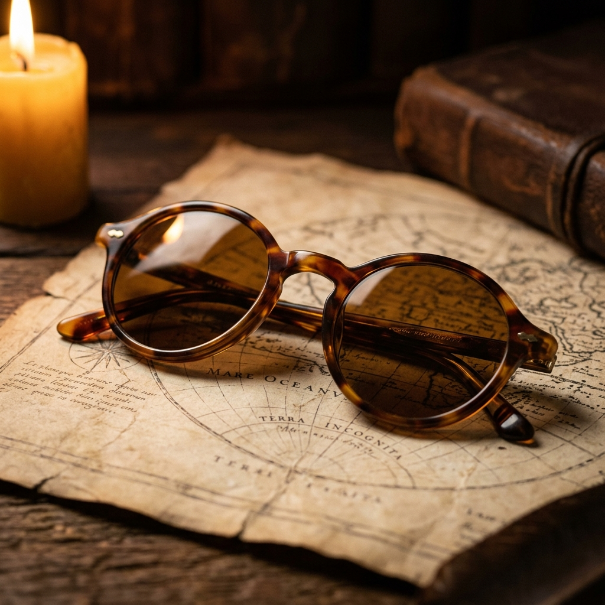

Chasing Light in Hokkaido

There's a specific quality of light in northern Hokkaido during February that you simply can't find anywhere else. It arrives low and golden, filtered through a permanent haze of snow dust, and it lasts for what feels like an entire afternoon. We went specifically to test it.
The Nikon Df came along — the silver edition, with its beautifully over-engineered brass dial system and the D4's full-frame sensor hidden inside a body that looks like it was designed in 1972. It's deceptive that way. If the modern camera industry is obsessed with speed and resolution, the Df is a quiet protest: a camera built for the person who still believes that the act of making a photograph should feel like something.
The Frames
We also brought a freshly restored pair of Matsuda M3023s — titanium frames from the early 1990s, sourced from a small shop in Akihabara that was clearing out old stock. The lenses had been swapped for deep ocean-blue CR39 sun lenses, custom-cut. Walking through the snow fields outside Asahikawa, the contrast through those lenses was extraordinary — the white became sculptural, the shadows turned violet.

The restored Matsuda M3023 — titanium and ocean-blue CR39.
Every piece we carry gets tested before it ships. That's not marketing — it's the only way to know if something is truly worth owning.
Sub-Zero Performance
The Df handled the cold without complaint. At minus fifteen, the shutter mech stayed crisp and the battery held for a full day of shooting — roughly 600 exposures. The only concession we made was keeping a second battery warm in a jacket pocket, which we never needed.
By the end of the trip, we had confirmed what we suspected: this camera, paired with the right glass, is one of the finest ways to experience a place. It slows you down. It makes you look. And that's the whole point.